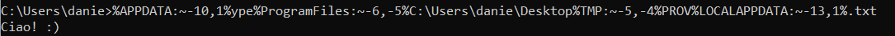

Windows: DOSfuscation
• To install Git on Windows:
https://git-scm.com/download/win• If we don not have a Windows VM
We can run Powershell commads on a Linux VM through pwsh.
Run pwsh, and then follow the exact same command from above. This tool is installed by default in your `Pwnbox` instance. You can also find installation instructions at this link:
https://docs.microsoft.com/en-us/powershell/scripting/install/installing-powershell-on-linux?view=powershell-7.2Install DOSfuscationGitHub:
https://github.com/danielbohannon/Invoke-DOSfuscationgit clone https://github.com/danielbohannon/Invoke-DOSfuscation.git
cd Invoke-DOSfuscation
Import-Module .\Invoke-DOSfuscation.psd1
Invoke-DOSfuscation
help
SET COMMAND ‘[command]’
encoding
1
execute the command
